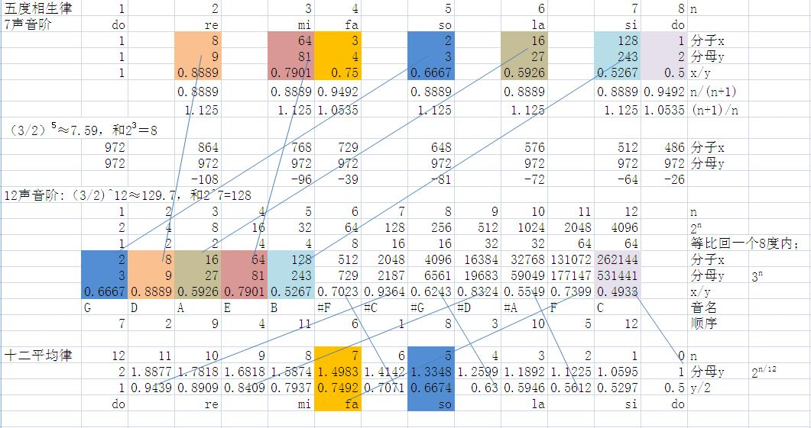

十二平均律，亦称“十二等程律”,世界上通用的把一组音（八度）分成十二个半音音程的律制，各相邻两律之间的振动数之比完全相等。十二平均律是指将八度的音程（二倍频程）按频率等比例地分成十二等份，每一等份称为一个半音即小二度。一个大二度则是两等份。将一个八度分成12等份有着惊人的一些凑巧。它的纯五度音程的两个音的频率比（即2的7/12次方）与1.5非常接近，人耳基本上听不出“五度相生律”和“十二平均律”的五度音程的差别。十二平均律在交响乐队和键盘乐器中得到广泛使用，现在的钢琴即是根据十二平均律来定音的。
1-i之间分成12份。具体1-2全音，2-3全音，3-4半音，4-5全音，5-6全音，6-7全音，7-i半音。
十二平均律在交响乐队和键盘乐器中得到广泛使用，钢琴即是根据十二平均律来定音的，因为只有“十二平均律”才能方便地进行移调。曲调由音阶组成，音阶由音组成。音有绝对音高和相对音高。声音是靠振动（声带、琴弦等）发出的，而振动的频率（每秒振动的次数），就决定了的音的绝对高度。不同的音有不同的振动频率。人们选取一定频率的音来形成音乐体系所需要的音高。
钢琴上每相邻的两个琴键（黑白都算）的频率的差别，音乐上即为半音。比如说C和#C相差半音，C和D相差两个半音（或曰一个全音），以此类推。如果B再往上升半音，会发现这个音的频率刚好是C的两倍，而在音乐上称为一个八度，这两个音听起来“很相象”。用小写的c来表示它，依次有#c,d……再往上走可以用c1……，c2……来表示，而往下走可以用大写的C1……，C2……来表示。
十二平均律也叫十二等程律，它把一个音阶分为十二个相等的半音，使各相邻两律间的频率比都是相等的。故称十二平均律。
明朝中叶，皇族世子朱载堉发明以珠算开方的办法，求得律制上的等比数列，具体说来就是：用发音体的长度计算音高，假定黄钟正律为1尺，求出低八度的音高弦长为2尺，然后将2开12次方得频率公比数1.059463094，该公比自乘12次即得十二律中各律音高，且黄钟正好还原。用这种方法第一次解决了十二律自由旋宫转调的千古难题，他的“新法密律”（即十二平均律）已成为人类科学史上最重要的发现之一。
钢琴键盘上共有黑、白键88个，就是根据十二平均律的原理制作的。
声音的本质是空气的振动。而空气的振动是以波的形式传播的，也就是所谓的声波。所有的波（包括声波、电磁波等等）都有三个最本质的特性：频率/波长、振幅、相位。对于声音来说，声波的频率（声学中一般不考虑波长）决定了这个声音有多“高”，声波的振幅决定了这个声音有多“响”，而人耳对于声波的相位不敏感，所以研究音乐时一般不考虑声波的相位问题。
律学当然不考虑声音有多“响”，所以律学研究的重点就是声波的频率。一般来说，人耳能听到的声波频率范围是20HZ（每秒振动20次）到20000HZ（每秒振动20000次）之间。声波的频率越大（每秒振动的次数越多），听起来就越“高”。频率低于20HZ的叫“次声波”，高于20000HZ的叫“超声波”。
需要特别指出的是，人耳对于声波的频率是指数敏感的。打比方说，100HZ、200HZ、300HZ、400HZ……这些声音，人听起来并不觉得它们是“等距离”的，而是觉得越到后面，各个音之间的“距离”越近。
很自然，用do、re、mi写的歌，如果换用高音do、高音re、高音mi来写，听众只会觉得音变高了，旋律本身不会有变化。这种等效性，其实就是“等差音高序列”的直接结果。
这种12声音阶在音乐界的地位，我只用举一个例子就能说明了。钢琴上的所有白键对应的就是原来7声音阶中的C、D……B，所有的黑键对应的就是12声音阶中新加入的C#、Eb……Bb。
八度音指的是频率加倍（即二倍频率）。因此在八度音中分为十二等分乃是分为十二个等比级数，其结果就是每个音的频率为前一个音的2-12倍;
琴弦的振动是和琴弦的长度有关系的。如果在一根弦振动的时候，用手指按住弦的中点，即让原来全部振动的弦，变成两根以1/2长度振动的弦，我们会听到一个比较高的音。这个音和原来的音之间就是八度音程的关系。因为在物理上，弦的振动频率和其长度是成反比的。
接着再试，数学上简单性仅次于3:1的是4:1，我们试试按弦的1/4点会怎样？又出现了两个音。一个音的频率是原来的4倍（因为弦长变成了原来的1/4），这和原来的音（术语叫“主音”）是两个八度音程的关系，可以不去管它。另一个音的频率是主音的4/3倍（因为弦长是原来的3/4）。现在我们又得到了一个重要的频率，4/3F。
在一个八度音程之内，还有那些音是重要的。这其实是律学的中心问题。也就是说，如果某一个音的频率是F，那么我们要寻找F和2F之间还有那些重要的频率。
如果大家有学习弦乐器（比如吉它、古琴、小提琴）的经验的话，都明白它们能发声是因为琴弦的振动。同一根弦，在不同的情况下振动，可以发出很多频率的声音。在听觉上，与主音F最和谐的就是3/2F和4/3F（除了主音的各个八度之外）。这个现象也被很多民族分别发现了。比如最早从数学上研究弦的振动问题的古希腊哲学家毕达哥拉斯（Pythagoras，约公元前6世纪）。我国先秦时期的《管子·地员篇》、《吕氏春秋·音律篇》也记载了所谓“三分损益律”。具体说来是取一段弦，“三分损一”，即均分弦为三段，舍一留二，便得到3/2F。如果“三分益一”，即弦均分三段后再加一段，便得到4/3F。
得到这两个频率之后，是否继续找1/5点、1/6点等等继续试下去呢？不行，因为听觉上这些音与主音的和谐程度远不及3/2F、4/3F。实际上4/3F已经比3/2F的和谐程度要低不少了。古人于是换了一种方法。与主音F最和谐的3/2F已经找到了，他们转而找3/2F的3/2F，即与最和谐的那个音最和谐的音，这样就得到了（3/2）2F即9/4F。可是这已经超出了2F的范围，进入了下一个八度。没关系，不是有“等差音高序列”吗？在下一个八度中的音，在这一个八度中当然有与它等价的一个音，于是把9/4F的频率减半，便得到了9/8F。
接着把这个过程循环一遍，找3/2的3次方，于是就有了27/8F，这也在下一个八度中，再次频率减半，得到了27/16F。
就这样一直循环找下去吗？不行，因为这样循环下去会没完没了的。我们最理想的情况是某一次循环之后，会得到主音的某一个八度，这样就算是“回到”了主音上，不用继续找下去了。可是（3/2）n，只要n是自然数，其结果都不会是整数，更不用说是2的某次方。律学所有的麻烦就此开始。
数学上不可能的事，只能从数学上想办法。古人的对策就是“取近似值”。他们注意到（3/2）5≈7.59，和23＝8很接近，于是决定这个音就是他们要找的最后一个音，比这个音再高一点就是主音的第三个八度了。这样，从主音F开始，我们只需把“按3/2比例寻找最和谐音”这个过程循环5次，得到了5个音，加上主音和4/3F，一共是7个音。这就是为什么音律上要取do、re、mi等等7个音符而不是6个音符或者8个音符的原因。
这7个音符的频率，从小到大分别是F、9/8F、81/64F、4/3F、3/2F、27/16F、243/128F。
如果这里的F是do，那么9/8F就是re、81/64F就是mi……，这7个频率组成了7声音阶。这7个音都有各自正式的名字，在西方音乐术语中，它们分别被叫做主音（tonic）、上主音（supertonic）、中音（mediant）、下属音（subdominant）、属音（dominant）、下中音（submediant）、导音（leading tone）。其中和主音关系最密切的是第5个“属音”so和第4个“下属音”fa，原因前面已经说过了，因为它们和主音的和谐程度分别是第一高和第二高的。由于这个音律主要是从“属音”so即3/2F推导出来的，而3/2这个比例在西方音乐术语中叫“纯五度”，所以这种音律叫做“五度相生律”。西方最早提出“五度相生律”的是古希腊的毕达哥拉斯（所以西方把按3/2比例定音律的做法叫做Pythagorean tuning），东方是《管子》一书的作者（不一定是管仲本人）。我国历代的各种音律，大部分也都是从“三分损益律”发展出来的，也可以认为它们都是“五度相生律”。
仔细看上面“五度相生律”7声音阶的频率，可以发现它们彼此的关系很简 单：do-re、re-mi、fa-so、so-la、la-si 之间的频率比都是9:8，这个比例被称为全音（tone）；mi-fa、si-do 之间的频率比都是256:243，这个比例被称为半音（semitone）。“五度相生律”产生的7声音阶，自诞生之日起就不断被批评。原因之一就是它太复杂了。前面说过，如果按住弦的1/5点或者1/6点，得到的音已经和主音不怎么和谐了，居然出现了81/64和243/128这样的比例，这不会太好听吧？于是有人开始对这7个音的频率做点调整，于是就出现了“纯律”（just intonation）。
“纯律”的重点是让各个音尽量与主音和谐起来，也就是说让各个音和主音的频率比尽量简单。“纯律”的发明人是古希腊学者塔壬同（今意大利南部的塔兰托城）的亚理斯托森努斯（Aristoxenus of Tarentum）。（东方似乎没有人独立提出“纯律”的概念。）此人是亚理士多德的学生，约生活在公元前3世纪。他的学说的重点就是要靠耳朵，而不是靠数学来主导音乐。他的书籍留下来的只有残篇，不过可以证实的是他提出了所谓“自然音阶”。
自然音阶也有7个音，但和“五度相生律”的7声音阶有不小差别。7个自然音阶的频率分别是：F、9/8F、5/4F、4/3F、3/2F、5/3F、15/8F。确实简单多了吧？也确实好听多了。这么简单的比例，就是“纯律”。
可以看出“纯律”不光用到了3/2的比例，还用到了5/4的比例。新的7个频率中和原来不同的就是5/4F、5/3（=5/4×4/3）F、15/8（=5/4×3/2）F。
虽然“纯律”的7声音阶比“五度相生律”的7声音阶要好听，数学上也简单，但它本身也有很大的问题。虽然各个音和主音的比例变简单了，但各音之间的关系变复杂了。原来“五度相生律”7声音阶之间只有“全音”和“半音”2种比例关系，如今出现了3种：9:8（被叫做“大全音”，major tone，就是原来的“全音”）、10:9（被叫做“小全音”，minor tone）、16:15（新的“半音”）。各位把自然音阶的频率互相除一下就能得到这个结果。更进一步说，如果比较自然音阶中的re和fa，其频率比是27/32，这也不怎么简单，也不怎么好听呢！所以说“纯律”对“五度相生律”的修正是不彻底的。事实上，“纯律”远没有“五度相生律”流行。
对于“五度相生律”的另一种修正是从另一个方向展开的。还记得为什么要取7个音符吗？是因为（3/2)^5≈7.59，和2^3=8很接近。可这毕竟是近似值，而不是完全相等。在一个八度之内，这么小的差距也许没什么，但是如果乐器的音域跨越了好几个八度，那么这种近似就显得不怎么好了。于是人们开始寻找更好的近似值。通过计算，古人发现（3/2)^12≈129.7，和2^7=128很接近，于是他们把“五度相生律”中“按3/2比例寻找最和谐音”的循环过程重复12次，便认为已经到达了主音的第7个八度。再加上原来的主音和4/3F，如今就有了12个音符。注意，“规范”音阶不是do、re、mi……等7个音符了，而是12个音符。这种经过修改的“五度相生律”推出的12声音阶，其频率分别是：F、2187/2046F、9/8F、19683/16384F、81/64F、4/3F、729/512F、3/2F、6561/4096F、27/16F、59049/32768F、243/128F。
和前面的“五度相生律”的7声音阶对比一下，可以发现原来的7个音都还在，只是多了5个，分别插在它们之间。用正式的音乐术语称呼原来的7个音符，分别是C、D、E、F、G、A、B。新多出来的5个音符于是被叫做C#（读做“升C”）、D#、F#、G#、A#。12音阶不能用do、re、mi的叫法了，应该被叫做：C、C#、D、D#、E、F、F#、G、G#、A、A#、B。把相邻两个音符的频率互相除一下，就会发现它们之间的比例只有两种：256:243（就是原来的“半音”，也叫做“自然半音”），2187:2048（这被叫做“变化半音”）。也就是说，这12个音符几乎可以说又构成了一个“等差音高序列”。它们之间的“距离”几乎是相等的。（当然，如果相邻两个音符之间的比例只有一种的话，就是严格的“距离”相等了。）原来的7声音阶中，C-D、D-E、F-G、G-A、A-B之间都相隔一个“全音”，如今则认为它们之间相隔了两个“半音”。这也就是“全”、“半”这种叫法的根据。
既然C#被认为是从C“升”了半音得到的，那么C#也可以被认为是从D“降”了半音得到的，所以C#和Db（读做“降D”）就被认为是等价的。事实上，5个新加入的音符也可以被写做：Db、Eb、Gb、Ab、Bb。
这种12声音阶在音乐界的地位，我只用举一个例子就能说明了。钢琴上的所有白键对应的就是原来7声音阶中的C、D……B，所有的黑键对应的就是12声音阶中新加入的C#、Eb……Bb。
从7声音阶发展到12声音阶的做法，在西方和东方都出现得很早。《管子》中实际上已经提出了12声音阶，后来的中国音律也大多是以“五度相生律”的12声音阶为主。毕达哥拉斯学派也有提出这12声音阶的。不过西方要到中世纪晚期才重新发现它们。
能不能把“五度相生律”的12声音阶再往前发展一下呢？可以的。12声音阶的依据就是（3/2）^12≈129.7，和2^7=128很接近，按照这个思路，继续找接近的值就可以了嘛。
还有人真地找到了，此人就是我国西汉的著名学者京房（77 BC-47 BC）。他发现（3/2）^53≈2.151×10^9，和2^31≈2.147×10^9也很接近，于是提出了一个53音阶的新音律。要知道古人并没有我们的计算器，计算这样的高次幂问题对他们来说是相当麻烦的。
当然，京房的新律并没有流行开，原因就是53个音阶也太麻烦了吧！开始学音乐的时候要记住这么多音符，谁还会有兴趣哦！但是这种努力是值得肯定的，也说明12声音阶也不完美，也确实需要改进。
“五度相生律”的12声音阶中的主要问题是，相邻音符的频率比例有两种（自然半音和变化半音），而不是一种。而且两种半音彼此差距还不小。（2187:2048）/（256:243）≈1.014。好像差不多哦？但其实自然半音本身就是256:243≈1.053了。
如果12声音阶是真正的“等差音高序列”的话，每个半音就应该是相等的，各个音阶就应该是“等距离”的。也就是说，真正的12声音阶可以把一个八度“等分”成12份。为什么这么强调“等分”、“等距离”呢？因为在音乐的发展过程中，人们越来越觉得有“转调”的必要了。
所谓转调，其实就是用不同的音高来唱同一个旋律。比方说，如果某一个人的音域是C～高音C（也就是以前的do～高音do），乐器为了给他伴奏，得在C～高音C之内弹奏旋律；如果另一个人的音域是D～高音D（也就是以前的re～高音re），乐器得在D～高音D之内弹奏旋律。可是“五度相生律”的12声音阶根本不是“等差音高序列”，人们会觉得C～高音C之内的旋律和D～高音D之内的旋律不一样。特别是如果旋律涉及到比较多的半音，这种不和谐就会很明显。可以说，如果钢琴是按“五度相生律”来决定各键的音高，那么只要旋律中涉及到许多黑键，弹出来的效果就会一塌糊涂。
这种问题在弦乐器上比较好解决，因为弦乐器的音高是靠手指的按压来决定的。演奏者可以根据不同的音域、旋律的要求，有意地不在规定的指位上按弦，而是偏移一点按弦，就能解决问题。可是键盘乐器（比如钢琴、管风琴、羽管键琴等）的音高是固定的，无法临时调整。所以在西方中世纪的音乐理论里，就规定了有些调、有些音是不能用的，有些旋律是不能写的。而有些教堂的管风琴，为了应付可能出现的各种情况，就预先准备下许多额外的发音管。以至于有的管风琴的发音管有几百甚至上万根之多。这种音律规则上的缺陷，导致一方面作曲家觉得受到了限制，一方面演奏家也觉得演奏起来太麻烦。
问题的根源还是出在近似值上。“五度相生律”所依据的（3/2）12毕竟和27并不完全相等。之所以会出现两种半音，就是这个近似值造成的。
对“五度相生律”12声音阶的进一步修改，东、西方也大致遵循了相似的路线。比如东晋的何承天（370 AD－447 AD），他的做法是把（3/2）12和27之间的差距分成12份，累加地分散到12个音阶上，造成一个等差数列。可惜这只是一种修补工作，并没有从根本上解决问题。西方的做法也是把（3/2）12和27之间的差距分散到其它音符上。但是为了保证主音C和属音G的3/2的比例关系（这个“纯五度”是一个音阶中最重要的和谐，即使是在12声音阶中也是如此），这种分散注定不是平均的，最好的结果也是12音中至少有一个“不在调上”。如果把差距全部分散到12个音阶上的话，就必须破坏C和G之间的“纯五度”，以及C和F之间的4/3比例（术语是“纯四度”）。这样一来，虽然方便了转调，但代价就是音阶再也没有以前好听了。因为一个八度之内最和谐的两个关系――纯五度和纯四度――都被破坏了。
一直到文艺复兴之前，西方音乐界通行的律法叫“平均音调律”（Meantone temperament），就是在保证纯五度和纯四度尽量不受影响的前提下，把（3/2）12和27之间的差距尽量分配到12个音上去。这种折衷只是一种无可奈何的妥协，大家其实都在等待新的音律出现。
终于还是有人想到了彻底的解决办法。不就是在一个八度内均分12份吗？直接就把2:1这个比例关系开12次方不就行了？也就是说，真正的半音比例应该是21/12 。如果12音阶中第一个音的频率是F，那么第二个音的频率就是 21/12F，第三个音就是 22/12F，第四个音是 23/12F，……，第十二个是 211/12F，第十三个就是 212/12F，就是2F，正好是F的八度。这是“转调”问题的完全解决。有了这个新的音律，从任何一个音弹出的旋律可以复制到任何一个其它的音高上，而对旋律不产生影响。西方巴洛克音乐中，复调音乐对于多重声部的偏爱，有了这个新音律之后，可以说不再有任何障碍了。后来的古典主义音乐，也间接地受益匪浅。可以说没有这个新的音律的话，后来古典主义者、浪漫主义者对于各种音乐调性的探索都是不可能的。
这种新的音律就叫“十二平均律”。首先发明它的是一位中国人，叫朱载堉（yù）。他是明朝的一位皇室后代，生于1536年，逝世于1611年。他用珠算开方的办法（珠算开12次方，难度可想而知），首次计算出了十二平均律的正确半音比例，其成就见于所著的《律学新书》一书。很可惜，他的发明，和中国古代其它一些伟大的发明一样，被淹没在历史的尘埃之中了，很少被后人所知。
西方人提出“十二平均律”，大约比朱载堉晚50年左右。不过很快就传播、流行开来了。主要原因是当时西方音乐界对于解决转调问题的迫切要求。当然，反对“十二平均律”的声音也不少。主要的反对依据就是“十二平均律”破坏了纯五度和纯四度。不过这种破坏程度并不十分明显。

在司马迁的《史记》“律书第三”中写到∶“……九九八十一以为宫。三分去一，五十四以为徵。三分益一，七十二以为商。三分去一，四十八以为羽。三分益一，六十四以为角。”
意思是取一根用来定音的竹管，长为81单位，定为“宫音”的音高。然后，我们将其长去掉三分之一，也就是将81乘上2/3，就得到54单位，定为“徵音”。将徵音的竹管长度增加原来的三分之一，即将54乘上4/3，得到72单位，定为“商音”。再去掉三分之一（三分损），72乘2/3，得48单位，为“羽音”。再增加三分之一（三分益），48乘4/3，得64单位，为“角音”。而这宫、商、角、徵、羽五种音高，就称为中国的五音。
中国音乐中用来定音律的“三分损益法”，与古希腊“毕氏学派”中的“五度相生律”的方法相同。
在声学中，声音的高低（如西洋音乐中的唱名Do、Re、Mi、Fa……）指的是与物体振动的频率。当我们取一简单物体用来定音高时（如竹管、丝弦），则它的频率与其长度是成反比的关系。如果物体的材质固定，长度愈长，声音愈低。
除此之外，当长度减为一半时，频率将变为原先的两倍；长度增成为原先的两倍时，频率成为原先的一半。我们将这种互为二倍数的特殊比例，定义为彼此互为“八度音”。所以“三分损”（长度变为原先的2/3）与“三分益”（长度变为原先的4/3），彼此之间正是一个“八度音”的关系（4/3 是 2/3 的两倍）。由此，我们便可以从九九八十一的长度出发，试算前述藉由“三分损益”求得的长度，所得到的十二律∶
黄钟∶81；
林钟（由黄钟三分损而来）∶81 * 2/3 = 54；
太簇（由林钟三分益而来）∶54 * 4/3 = 72；
南吕（由太簇三分损而来）∶72 * 2/3 = 48；
姑洗（由南吕三分益而来）∶48 * 4/3 = 64；
应钟（由姑冼三分损而来）∶64 * 2/3 = 42.6667；
蕤宾（由应钟三分益而来）∶42.6667 * 4/3 = 56.8889；
大吕（由蕤宾三分益而来）∶56.8889 * 4/3 = 75.8519；
夷则（由大吕三分损而来）∶75.8519 * 2/3 = 50.5679；
夹钟（由夷则三分益而来）∶50.5679 * 4/3 = 67.4239；
无射（由夹钟三分损而来）∶67.4239 * 2/3 = 44.9492；
中吕（由无射三分益而来）∶44.9492 * 4/3 = 59.9323；
清黄钟（黄钟的高八度音，由仲吕三分损而来）∶59.9323 * 2/3 = 39.9549。
我们注意到最后一个“清黄钟”的长度39.9546，与直接取“黄钟”长度的一半 40.5 仍有一段小小的差距，这就是“黄钟不能还原”的问题。因为在连乘十二次 2/3 或 4/3 后，最后的值不可能达到原始的 1/2。
另外，若在定律时不断地使用三分损益的操作，最后一定会出现除不尽的小数，使得在实际制作时容易产生误差。然而在现实上，准确度（Percision）与精确度（Accuracy）绝对有其极限，所以经过十二次的三分损益之后，已经可以构成一个（不甚完美）的音阶循环。这也是为何中西音乐理论中，都不约而同地发展出以“12音阶”为主流的原因。之后才会出现如纯律、十二平均律等不同的改进或修正方法。
1 音律为什么是7个音符(五度相生律)？
1.1 一个音程对应一段弦L，在一段弦内需要找到对应最和谐的音的点；(弦乐器弦的振动频率和其长度是成反比的)
2 要能解决“转调”问题（简单的关系或比例，弦的不同段实现同音不同调的需要，弦长减半，音高为两倍，即2F；）
1.3 一段弦在3/4L和2/3L这两个位置与主音是最和谐的音；
1.4 转而找2/3的2/3，即与最和谐的那个音的最和谐的音，这样就得到了4/9的位置，即9/4F音高。如果超出了2F的范围，进入了下一个音程可
利用“等差音高序列”将频率减半，得弦长8/9的位置。如此进行“按3/2比例寻找最和谐音”这个过程循环，循环多少次呢？考虑到（3/2）^5
≈7.59，和2^3＝8很接近;所以循环5次比较合适，得到了5个音，加上主音和4/3F，一共是7个音（两音之间的关系只存在两种比例关系，也就
是全音与半音的关系）。这就是为什么音律上要取do、re、mi等等7个音符而不是6个音符或者8个音符的原因。
2 五度相生律的修正
上述半弦长两倍音高的（3/2）^5≈7.59和2^3＝8的值存在差异，需要修正；
2.1 从7声音阶发展到12声音阶
（3/2)^12≈129.7，和2^7=128很接近，于是他们把“五度相生律”中“按3/2比例寻找最和谐音”的循环过程重复12次，就有了12个音符（包
括上面的7个音符）。
2.2 十二平均律：
实现一个八度内均分12份，可以直接就把2:1这个比例关系开12次方。也就是说，真正的半音比例应该是2^(1/12);